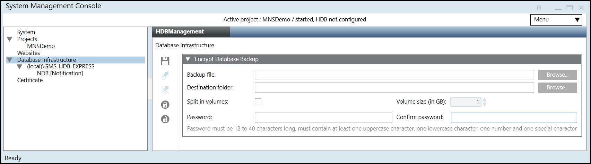
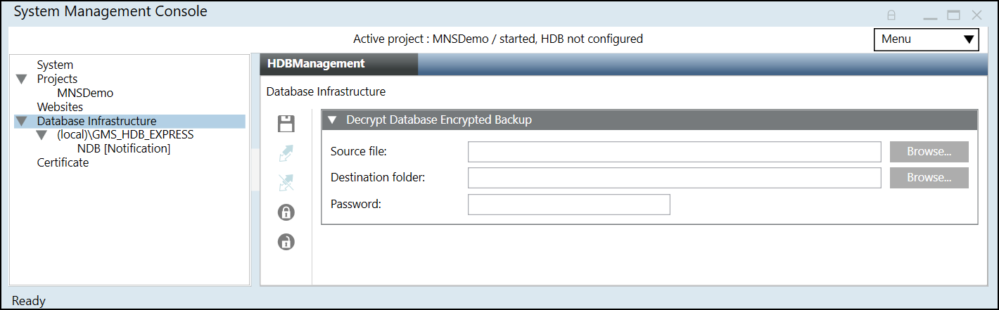
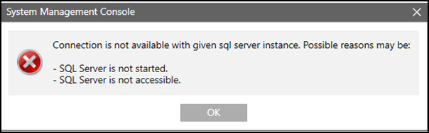

Notification Database Procedures
Select any of the procedures for additional information on the Notification database.
Encrypt Database Backup
Scenario
You have a Notification Database backup stored at a known path on Server. You want to secure Notification Database during transport from any unauthorized access. Typically if the database is of high size (might be in some GB or may be in TB), you can split it during encryption.
- SMC is launched.
- You have sufficient disk space on the drive before you start notification database backup encryption.
- In the SMC tree, select Database Infrastructure.
- Click Encrypt Database Backup
 .
. - In the Encrypt Database Backup expander that displays, do the following:
a. Click Browse to select the notification database backup from the backup folder path.
You can also paste the notification database backup path in the Backup folder path field.
b. Click Browse to select the destination folder or paste the path where you want to keep the encrypted notification database backup. Default path is the Backup folder path that you have provided.
NOTE: If you do not have Write permission on the selected destination folder or the backup destination folder path is invalid then an error message displays and the notification database backup is not encrypted at the selected destination folder.
For more information see the ManagementLog.txt file located at the path
[installation drive:]/[installation folder]\GMSMainProject\log.
c. Select the Split in volumes check box. Specify the split size in GB in the text field Volume size (in GB). For example 2 GB. Default is 1 GB.
d. Type the password and confirm it.
NOTE: The password must be 12 to 40 characters long and must contain at least one uppercase character, one lowercase character, one number, and one special character except the double quote (“) character. - Click Save
 .
.
- The selected notification database backup is compressed in 7-Zip format using Advanced Encryption Standard (AES) 256 standard, encrypted with the password that you have given and is stored at the specified destination folder.
You must decrypt this encrypted notification database backup before restoring it.
For information on Decrypting the Notification Database Backup, see History Infrastructure Procedures.


NOTE 1:
You can close SMC as well as select another node in SMC, while database encryption is in progress.
The encryption continues in background and the encrypted notification database backup is available upon completion at the destination path that you have provided.
NOTE 2:
If you want to select backup from the shared network path then you must paste the path in the source or destination path field. For example, \\ABC1PQR7c\Share_User\Backups\909MBSTR1_SLC1_HDB14.bak
Do not use the mapped drive when browsing!
Decrypting Database Encrypted Backup
Scenario
You have a notification database backup which is compressed in 7z Archive (.7z) file type (and 7z.001 (7z.001) file type for split backup files), encrypted with the password stored at a known path on Server. You want to decrypt the notification database backup using SMC.
Encrypted notification database backup 7z Archive (.7z) files can also be manually decrypted using any decompression tool such as 7-Zip etc.
- SMC is launched.
- In the SMC tree, select Database Infrastructure.
- Click Decrypt Database Backup
 .
. - In the Decrypt Database Encrypted Backup expander that displays, do the following:
- Click Browse to select the compressed and encrypted backup from the path where you stored it or you can also paste the encrypted backup path in the Source file path field.
The encrypted history database backup file must be only of 7z Archive (.7z) file type.
If you have split the backup, then you must select 7z.001 (7z.001) file type. - Click Browse to select the Destination folder path for storing the notification database backup folder or paste the path where you want to decrypt the encrypted notification database backup.
NOTE: If you do not have Write permission on the selected destination folder or if there is no sufficient disk space on the selected drive, or if the backup destination folder path is invalid then an error message displays and the notification database backup is not decrypted at the selected destination folder.
For more information, see the ManagementLog.txt file located at the path
[installation drive:]/[installation folder]\GMSMainProject\log. - Enter the password that you entered during encryption.
- Click Save .
- The selected compressed, encrypted notification database backup is decrypted and is stored at the specified destination folder.
You can now restore this project backup using the Restore Project icon. See Restoring and Upgrading the History Database.
icon. See Restoring and Upgrading the History Database.

NOTE:
If you want to select backup from the shared network path then you must paste the path in the source or destination path field. For example, \\ABC1PQR7c\Share_User\Backups\909MBSTR1_SLC1_HDB14.bak
Do not use the mapped drive when browsing.
Link an NDB to the SQL Server
You need to link an NDB to the SQL Server only when you scan and select an already existing NDB. When you create a new NDB it gets automatically linked to the SQL Server.
- You have selected an SQL Server.
- One or more Notification Databases are available on the selected server.
- In the SMC tree, select Database Infrastructure > [SQL server name].
- Select the HDBManagement tab.
- Open the Databases expander.
- From the Type drop down list, select the type of database to be detected on the SQL Server instance. For example, to detect the databases associated with the Notification extension, select Notification in the list.
- Click Scan.
- The Notification Databases found on the basis of the selected type on the SQL Server instance display.
- Select the database to be linked to the SQL server and thereafter click Link
 .
.
- The Notification Database is linked and started. The Database Info displays the general settings for the linked Notification Database.

Unlink an NDB
- A Notification Database is linked.
- In the SMC tree, select Database Infrastructure > [SQL server name].
- In the HDBManagement tab, select the Databases expander and thereafter select the database to be unlinked.
- Click Unlink
 .
. - In the SMC tree, select Database Infrastructure > [SQL server name].
- The System Management Console view is updated.
Change NDB Properties
- A Notification Database is available and linked.
- In the SMC tree, select Database Infrastructure > [SQL server name] > [notification database name].
- Click Edit
 .
. - You can change the following properties while the Notification Database is running:
- Database size (For more information, see Database Information)
Change the size of the NDB database:
‒ Maximum 10 GB for SQL Server Express
Backup model (For more information, see Recovery Models)
Select the backup model Simple or Full for the notification database. The backup model can be manually changed in both directions at any time. Long term storage databases are always in recovery model Full. - Backup folder (For more information, see Files and Paths)
Select the backup folder; backup file: E:\[MyBak]\NDB.bak - Recovery log path (For more information, see Files and Paths)
Select the recovery folder; recovery log path: E:\[MyRevoveryPath] - You can change the following users only when the Notification Database is stopped:
a. DB owner: Desigo CC SMC user who requires NDB owner rights. You can change it as required. The NDB owner must be different from the NDB user and the NDB service user.
b. DB user: Desigo CC project user who requires NDB user rights for read and write operations. You can change it as required in System Account Settings. See Settings Expander in SMC System Settings.
c. DB service user: Desigo CC service user who requires NDB service user rights for maintenance operations. You can change it as required in NDB Service Account Settings. See Settings Expander in SMC System Settings. - Click Save .
All edited data is saved.
NOTE:
The size of the Notification database cannot be decreased after the size is extended.
Delete an NDB
- SMC is launched with a Windows account configured on SQL Server with sysadmin fixed server role. If the required privileges are not available a dialog box appears to provide a Windows account configured on SQL Server with sysadmin fixed server role.
NOTICE

Data Loss
When you delete the SQL database, all logged project data is lost irretrievably. Back up the data prior to running this action.
- A backup copy of the Notification Database was created and saved.
- In the SMC tree, select Database Infrastructure > [SQL server name] > [notification database name].
- Click Drop
 .
. - Click Yes.
- The Notification Database is deleted and removed from the server.
NOTE:
If you do not delete the Notification Database using the SMC, the Notification Database continues to be displayed in the SMC tree. In this case, select the Notification Database and click OK.
Rename SQL Server Name
Scenario
You have renamed the SQL Server Instance and the Notification Database connection is not available with existing SQL Server Instance.
Cause
In SMC project, the SQL Server Instance is not accessible. Additionally, in Notification Database wherever the old SQL Server Instance is referred the database and server link is disconnected.
Solution
To connect the Notification Database to the SQL server instance, you need to manually change the SQL Server instance name in MNS_ProjectSpecific.config file located at path C:\GMSProjects\[Project Name]\mns.
NOTE: Renaming SQL Server instance is not recommended.
